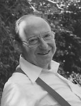

Please note: the AAS Obituaries are temporarily being hosted on this website while their full content is being ingested into the PubPub publishing platform newly adopted by the Bulletin of the American Astronomical Society. When the migration is complete, your existing links will take you to the final, migrated content. Contact peter.williams@aas.org with any questions.
Peter Meyer (1920-2002)
Peter Meyer, a distinguished astrophysicist and pioneer in cosmic-ray observations, died in Chicago on 7 March 2002, after a stroke, following long illness. He was born in Berlin, Germany, on 6 January 1920, the son of Franz Julius Meyer, a Jewish physician, and Frida Luise (née Lehmann) Meyer, a nurse. Peter received his initial academic training at the Technical University in Berlin, with the famous physicist Hans Geiger as one of his teachers. He received a degree as Diplom Ingenieur in 1942 with a thesis on proportional counters. Because of his partial Jewish heritage, he was permitted neither to continue his studies towards a PhD, nor to have the “honor” of serving in the war. He survived as a factory worker, and after the war, enrolled at the University of Göttingen. With Wolfgang Paul (Nobel Prize in Physics, 1989) and Hans Kopfermann as his advisors, Peter received a PhD in physics in 1948, with a thesis on the precise measurement of the binding energy of the deuteron. He continued research in experimental nuclear physics in Göttingen, and as a post-doctoral fellow at the Cavendish Laboratory in Cambridge. From 1950 to 1953, Peter was a staff scientist at the Max Planck Institute for Physics at Göttingen.
In 1953, Peter came to the U.S. and became a Research Associate of John Simpson at the Institute for Nuclear Studies (now the Enrico Fermi Institute) of the University of Chicago. He remained associated with this University for the rest of his life, although he accepted invitations for a number of extended research visits at the Max Planck Institutes in Garching and Heidelberg. He was appointed Assistant Professor of Physics at Chicago in 1956, promoted to Associate Professor in 1962, and to Professor in 1966. Peter served as Director of the Enrico Fermi Institute from 1978 to 1983, and as Chairman of the Department of Physics from 1986 to 1989. In 1990, he became Professor Emeritus.
As cosmic rays were a challenging topic at the intersection of nuclear physics, astrophysics, and emerging particle physics, Peter became interested in this subject during his early career in Göttingen, and contributed to the classic collection of review articles on cosmic radiation edited by Heisenberg in 1953. After coming to Chicago, cosmic ray studies remained at the center of his research until the end of his career.
Together with John Simpson, Peter conducted a number of measurements with instrumentation on balloons or on aircraft, to investigate the then mysterious variations of cosmic rays with time and with geographic location. It was not clear which of these variations were of solar origin, or intrinsic to the galactic radiation, or just due to phenomena in the earth’s magnetic field and ionosphere. Important insight came from observations of a gigantic solar flare in 1956 which Simpson, Meyer, and Eugene Parker could only explain by assuming that interplanetary space is filled with plasma and varying magnetic field, strongly affected by solar activity. This idea led, subsequently, to the concept of the solar wind.
Peter also collaborated with Simpson on the design of some of the first cosmic-ray detectors flown in space. In parallel with this work, he started a research program that would lead to a long series of ever more complex cosmic ray detectors carried by giant stratospheric balloons. First, he tried to detect electrons in the cosmic rays. Their existence was inferred from observations of non-thermal radio emission from the galaxy, but was never proven directly, and the experimental obstacles were formidable. Peter, together with his graduate student Rochus Vogt, devised a new and completely electronic instrument, and succeeded in 1961, at about the same time that James Earl of the University of Minnesota reported the observation of electrons with balloon-borne cloud chambers. Electrons and positrons can be produced in about equal proportions by collision of protons with interstellar gas. The obvious question was then: Is there an excess of negative electrons that would indicate that electrons are also accelerated in primary cosmic ray sources? To test this, Peter, together with colleague Roger Hildebrand and graduate students Jack Fanselow and Robert Hartman, built the first magnet spectrometer flown on balloons, and could report in 1964 that, indeed, the negative electrons significantly outnumbered the positrons.
Detailed observations of cosmic-ray electrons, including electrons of solar origin or those accelerated in Jupiter’s magnetosphere, occupied Peter and his group (including Jacques L’Heureux, Dietrich Hovestadt, and Paul Evenson) for the next two decades, using a variety of instruments, on balloons and in space.
In the 1970’s, Peter directed his attention towards measurements of the nuclear composition of cosmic rays at very high energies. To this end, new particle identification techniques, such as gas Cherenkov counters, were applied, and with colleague Dietrich Müller and graduate student Einar Juliusson, Peter discovered that the relative intensity of secondary cosmic-ray nuclei produced by spallation of primaries in interstellar space, decreases continuously with increasing energy, as if the parent primary particle traversed a smaller and smaller galactic path length at higher energies. A similar observation was also made by Luis Alvarez’ group at Berkeley at about the same time. As a consequence of this unexpected phenomenon, cosmic rays must be generated at their sources at a higher rate at high energy than the observed spectrum at Earth would imply: the energy spectrum emitted at the sources must be harder than that observed here. In the late 1970’s, theorists finally proposed the first-order Fermi acceleration process in supernova shockfronts as an efficient mechanism to generate cosmic rays. This process predicted a hard-source energy spectrum for which the Chicago measurements provided the ready evidence.
Eventually, these studies led to a very large instrument, dubbed the “Chicago egg”, that flew on the Space Shuttle in 1985. This detector was designed by Meyer and Müller, who were later joined by L’Heureux and Simon Swordy. It used, for the first time, transition radiation detectors to measure the energy of cosmic-ray nuclei. With this instrument, details of the elemental composition of cosmic rays could be measured well into the TeV-region of energies.
Peter was convinced that observational progress is tightly coupled to experimental finesse. Throughout his career, he received joy and satisfaction from implementing new experimental techniques. He led a sizeable group of postdocs, technicians, and students who shared this conviction, respected his leadership and accepted Peter as a mentor in many aspects of their lives, not just the technical and scientific questions of research.
Peter was a principled man. He was modest, reliable, and dependable. He was very well read in classical and modern literature. His life was disciplined and structured, but had many facets. The workday belonged to the laboratory, but evenings were reserved for the family, and for his most serious passion, music. Peter was an accomplished cellist, and together with his first wife, Luise Schützmeister Meyer, who played the piano, he arranged for regular chamber music evenings in his home, which are fondly remembered by all who had the privilege of being invited to listen. Some remember in awe how Peter was able to combine smoking the pipe with playing the cello! Both Peter and Luise were avid skiers, and the yearly ski vacations and many other outdoor activities together with their two sons were important and cherished family traditions. After Louise’s untimely death in 1981, Peter married the renowned molecular biologist Patricia Spear in 1983. The following year, Peter and Pat moved into the city near the university. In their nineteen years together they actively pursued their common interests in music, theater and the outdoors. Together they traveled widely and often across the globe.
Peter served unselfishly on numerous science policy committees. He is remembered for his fairness, open mind, and good advice. He received a number of honors, for example, the Quantrell teaching award at the University of Chicago, foreign membership in the Max-Planck-Institute for Extraterrestrial Physics in Garching, and the Alexander von Humboldt award for senior U.S. scientists. In 1989, Peter was elected to the National Academy of Sciences.
Many people met Peter over his long and distinguished career: professional colleagues, managers at NASA and industry, engineers and technicians, numerous students, including seventeen who received their PhD’s under his advice. All of them will have fond and enduring memories of Peter as both a scientific leader and as a warm and caring human being.
Peter Meyer is survived by his wife Patricia Spear, and his two sons Stephan and Andreas Meyer.
Obituary written by: Dietrich Müller (University of Chicago)
BAAS Citation: BAAS, 2002, 34, 1368
SAO/NASA ADS Bibcode: 2002BAAS...34.1368M